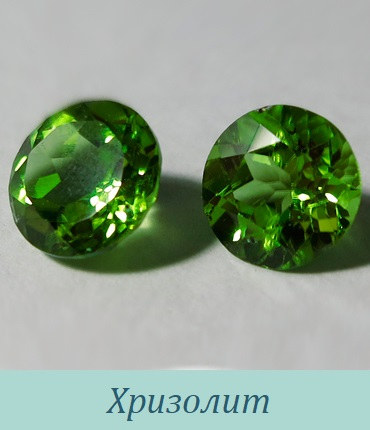
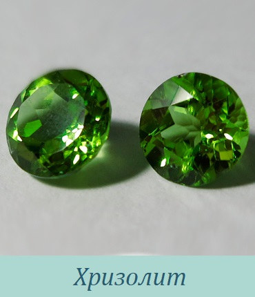

Галерея камней
Камни и минералы - это не только удивительные дары природы и материал для украшений.Камни обладают различными свойствами. Люди всегда с большим уважением относились к могучим и таинственным силам драгоценных камней. Они наделяли камни магическими и лечебными свойствами. Сила камня или минерала воздействует на человека в целом и отдельно на определенные органы. Правильно выбранный камень помогает исцелиться от целого ряда недугов. Каждый камень обладает только ему присущими свойствами и представляет собой некую защиту для человека.
 
